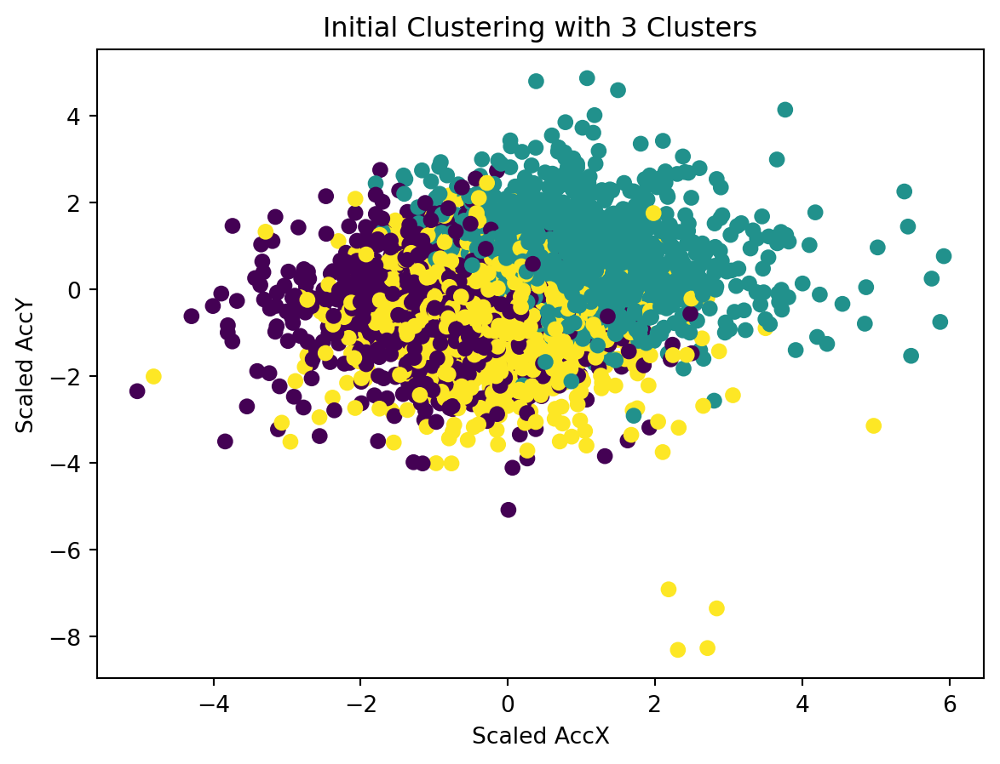

Clustering: Optimizing Driver Behavior Analysis with Machine Learning Clustering
Introduction
The analysis of driving behaviors, a task of both complexity and nuance, is increasingly significant in the realms of traffic safety and autonomous vehicle development. Machine learning, particularly clustering algorithms, stands at the forefront of this analysis, offering the ability to dissect and understand the myriad patterns hidden within driving data. Clustering, a form of unsupervised learning, excels in finding structure within unlabeled data, grouping similar data points together based on shared characteristics.
In this blog, we dive into a practical application of clustering using a dataset from Kaggle titled ‘Driving Behavior’. This dataset is intriguing because it comes with labeled data, categorizing driving behaviors into three types: SLOW, NORMAL, and AGGRESSIVE. While clustering typically operates on unlabeled data, we use this labeled dataset to our advantage. It will allow us to compare the clusters formed by our machine learning algorithm against the pre-labeled categories, providing an insightful backdrop to understand and validate our clustering results.
Our aim is to illustrate the entire process of applying clustering to analyze driving behavior. We start with a predefined notion of having three clusters based on the labels present in the dataset. However, as we delve deeper into the analysis, we realize the necessity to step back and question our initial assumptions. We employ the Elbow Method, supplemented by the kneed Python package, to determine the optimal number of clusters in a more data-driven manner. This journey from assumption to optimization is not just about applying a machine learning technique but also about understanding the nuances and intricacies that come with real-world data analysis.
Join us as we unravel the complexities of driving behaviors through clustering, starting with predefined labels and moving towards an optimized, data-driven approach.
Setting the Stage with Data and Tools
In the world of machine learning, the choice of dataset is as crucial as the algorithm itself. For our endeavor into clustering driving behaviors, we’ve chosen a dataset from Kaggle named ‘Driving Behavior’. This dataset is particularly interesting for a few reasons. Firstly, it’s labeled with specific driving behaviors, which, while not necessary for clustering, provides us with a unique opportunity to validate and understand our clustering results in a more tangible way.
The Kaggle ‘Driving Behavior’ Dataset
This dataset offers a detailed glimpse into various aspects of driving, captured through different features:
Acceleration (AccX, AccY, AccZ): These features measure the vehicle’s acceleration in meters per second squared (\[m/s^2\]) along the X, Y, and Z axes. Acceleration data is crucial for understanding sudden movements and changes in driving speed.
Rotation (GyroX, GyroY, GyroZ): Here, we have the vehicle’s angular velocity around the X, Y, and Z axes, measured in degrees per second (\[°/s\]). This data helps in identifying steering patterns and gauging the stability of the vehicle during various maneuvers.
Classification Labels (SLOW, NORMAL, AGGRESSIVE): Each data point is tagged with one of these labels. It’s important to note that in clustering, such labels are not typically required. However, in our case, these labels will serve as a benchmark, enabling us to compare our unsupervised learning results with pre-defined categories.
This dataset not only provides a foundation for applying clustering techniques but also allows us to explore how well unsupervised learning can mirror human-labeled classifications.
Tools and Libraries
Our analysis will be powered by several key tools and libraries, each bringing its own strengths to the table:
Python: Our language of choice, renowned for its ease of use and strong community support, especially in data science.
Scikit-learn: A powerful Python library for machine learning. We will use its clustering algorithms, specifically KMeans, to group our data.
Matplotlib: This library will help us in visualizing our data and the results of our clustering, making the insights more accessible.
kneed: An invaluable tool when it comes to determining the optimal number of clusters. It programmatically identifies the ‘elbow point’ in our dataset, a crucial step in ensuring our clustering approach is as effective as possible.
In the next sections, we’ll dive into the process of applying these tools to our dataset, starting with our initial approach and gradually moving towards a more refined, data-driven methodology.
Section 2: Initial Clustering Approach
Embarking on our journey to unravel the driving patterns hidden in the dataset, we initially gravitated towards a straightforward approach: clustering the data into three groups. This decision was influenced by the dataset’s labels - SLOW, NORMAL, and AGGRESSIVE. It seemed logical to align our clusters with these pre-defined categories, under the assumption that they would naturally encapsulate the essence of the driving behaviors.
Why Start with Three Clusters?
The rationale was straightforward: the dataset labels suggested three distinct types of driving behaviors. Clustering aims to group similar data points, and with these labels as a guide, it seemed reasonable to start our analysis by segmenting the data into three clusters, hoping they would align with the labeled behaviors.
Applying KMeans Clustering
The KMeans algorithm was chosen for its simplicity and effectiveness in many clustering scenarios. Here’s a breakdown of how we applied it:
Defaulting to user installation because normal site-packages is not writeable
Requirement already satisfied: numpy in /Users/zimingfang/Library/Python/3.9/lib/python/site-packages (1.26.2)
WARNING: You are using pip version 21.2.4; however, version 23.3.1 is available.
You should consider upgrading via the '/Library/Developer/CommandLineTools/usr/bin/python3 -m pip install --upgrade pip' command.
Defaulting to user installation because normal site-packages is not writeable
Requirement already satisfied: matplotlib in /Users/zimingfang/Library/Python/3.9/lib/python/site-packages (3.8.2)
Requirement already satisfied: cycler>=0.10 in /Users/zimingfang/Library/Python/3.9/lib/python/site-packages (from matplotlib) (0.12.1)
Requirement already satisfied: importlib-resources>=3.2.0 in /Users/zimingfang/Library/Python/3.9/lib/python/site-packages (from matplotlib) (6.1.1)
Requirement already satisfied: pyparsing>=2.3.1 in /Users/zimingfang/Library/Python/3.9/lib/python/site-packages (from matplotlib) (3.1.1)
Requirement already satisfied: numpy<2,>=1.21 in /Users/zimingfang/Library/Python/3.9/lib/python/site-packages (from matplotlib) (1.26.2)
Requirement already satisfied: contourpy>=1.0.1 in /Users/zimingfang/Library/Python/3.9/lib/python/site-packages (from matplotlib) (1.2.0)
Requirement already satisfied: pillow>=8 in /Users/zimingfang/Library/Python/3.9/lib/python/site-packages (from matplotlib) (10.1.0)
Requirement already satisfied: fonttools>=4.22.0 in /Users/zimingfang/Library/Python/3.9/lib/python/site-packages (from matplotlib) (4.45.1)
Requirement already satisfied: packaging>=20.0 in /Users/zimingfang/Library/Python/3.9/lib/python/site-packages (from matplotlib) (23.2)
Requirement already satisfied: python-dateutil>=2.7 in /Users/zimingfang/Library/Python/3.9/lib/python/site-packages (from matplotlib) (2.8.2)
Requirement already satisfied: kiwisolver>=1.3.1 in /Users/zimingfang/Library/Python/3.9/lib/python/site-packages (from matplotlib) (1.4.5)
Requirement already satisfied: zipp>=3.1.0 in /Users/zimingfang/Library/Python/3.9/lib/python/site-packages (from importlib-resources>=3.2.0->matplotlib) (3.17.0)
Requirement already satisfied: six>=1.5 in /Library/Developer/CommandLineTools/Library/Frameworks/Python3.framework/Versions/3.9/lib/python3.9/site-packages (from python-dateutil>=2.7->matplotlib) (1.15.0)
WARNING: You are using pip version 21.2.4; however, version 23.3.1 is available.
You should consider upgrading via the '/Library/Developer/CommandLineTools/usr/bin/python3 -m pip install --upgrade pip' command.
Defaulting to user installation because normal site-packages is not writeable
Requirement already satisfied: scipy in /Users/zimingfang/Library/Python/3.9/lib/python/site-packages (1.11.4)
Requirement already satisfied: numpy<1.28.0,>=1.21.6 in /Users/zimingfang/Library/Python/3.9/lib/python/site-packages (from scipy) (1.26.2)
WARNING: You are using pip version 21.2.4; however, version 23.3.1 is available.
You should consider upgrading via the '/Library/Developer/CommandLineTools/usr/bin/python3 -m pip install --upgrade pip' command.
Defaulting to user installation because normal site-packages is not writeable
Requirement already satisfied: scikit-learn in /Users/zimingfang/Library/Python/3.9/lib/python/site-packages (1.3.2)
Requirement already satisfied: numpy<2.0,>=1.17.3 in /Users/zimingfang/Library/Python/3.9/lib/python/site-packages (from scikit-learn) (1.26.2)
Requirement already satisfied: joblib>=1.1.1 in /Users/zimingfang/Library/Python/3.9/lib/python/site-packages (from scikit-learn) (1.3.2)
Requirement already satisfied: threadpoolctl>=2.0.0 in /Users/zimingfang/Library/Python/3.9/lib/python/site-packages (from scikit-learn) (3.2.0)
Requirement already satisfied: scipy>=1.5.0 in /Users/zimingfang/Library/Python/3.9/lib/python/site-packages (from scikit-learn) (1.11.4)
WARNING: You are using pip version 21.2.4; however, version 23.3.1 is available.
You should consider upgrading via the '/Library/Developer/CommandLineTools/usr/bin/python3 -m pip install --upgrade pip' command.
Defaulting to user installation because normal site-packages is not writeable
Requirement already satisfied: pandas in /Users/zimingfang/Library/Python/3.9/lib/python/site-packages (2.1.3)
Requirement already satisfied: pytz>=2020.1 in /Users/zimingfang/Library/Python/3.9/lib/python/site-packages (from pandas) (2023.3.post1)
Requirement already satisfied: python-dateutil>=2.8.2 in /Users/zimingfang/Library/Python/3.9/lib/python/site-packages (from pandas) (2.8.2)
Requirement already satisfied: tzdata>=2022.1 in /Users/zimingfang/Library/Python/3.9/lib/python/site-packages (from pandas) (2023.3)
Requirement already satisfied: numpy<2,>=1.22.4 in /Users/zimingfang/Library/Python/3.9/lib/python/site-packages (from pandas) (1.26.2)
Requirement already satisfied: six>=1.5 in /Library/Developer/CommandLineTools/Library/Frameworks/Python3.framework/Versions/3.9/lib/python3.9/site-packages (from python-dateutil>=2.8.2->pandas) (1.15.0)
WARNING: You are using pip version 21.2.4; however, version 23.3.1 is available.
You should consider upgrading via the '/Library/Developer/CommandLineTools/usr/bin/python3 -m pip install --upgrade pip' command.
/Users/zimingfang/Library/Python/3.9/lib/python/site-packages/sklearn/cluster/_kmeans.py:1416: FutureWarning: The default value of `n_init` will change from 10 to 'auto' in 1.4. Set the value of `n_init` explicitly to suppress the warning
super()._check_params_vs_input(X, default_n_init=10)
In this code snippet, we begin by loading the dataset and selecting our features of interest, namely the acceleration and rotation measurements. These features are then scaled using StandardScaler, a crucial step to ensure that all features contribute equally to the clustering process. The KMeans algorithm is then applied to the scaled data, specifying three clusters.
Visualizing the Initial Results
To understand our initial clustering, we visualized the results:
import matplotlib.pyplot as pltplt.scatter(scaled_features[:,0], scaled_features[:,1], c=clusters, cmap='viridis')plt.xlabel('Scaled AccX')plt.ylabel('Scaled AccY')plt.title('Initial Clustering with 3 Clusters')plt.show()

This visualization plots the scaled acceleration data on the X and Y axes, colored by the assigned cluster. It provides a first glimpse into how the data points are grouped by the algorithm.
Limitations of the Initial Approach
While starting with three clusters seemed logical, this approach had its limitations. Clustering, especially KMeans, doesn’t inherently consider pre-existing labels. It simply groups data based on feature similarity. Moreover, the true complexity of driving behavior might not be accurately captured in just three categories. This realization led us to question our initial assumption: Were three clusters really sufficient to capture the diverse nuances of driving behavior?
In the following section, we explore how we addressed these limitations by seeking an optimal number of clusters beyond the confines of the initial labeled categories.
Source Code
---title: "Clustering"author: "Joanna Fang"date: "2023-11-98"categories: [ml, code, clustering, driving, kaggle]jupyter: python3format: html: toc: true code-block-bg: "#FFFFFF" code-block-border-left: "#E83283" code-tools: source: true toggle: false caption: none---# Clustering: Optimizing Driver Behavior Analysis with Machine Learning Clustering {width="50%" fig-align="center"}---## IntroductionThe analysis of driving behaviors, a task of both complexity and nuance, is increasingly significant in the realms of traffic safety and autonomous vehicle development. Machine learning, particularly clustering algorithms, stands at the forefront of this analysis, offering the ability to dissect and understand the myriad patterns hidden within driving data. Clustering, a form of unsupervised learning, excels in finding structure within unlabeled data, grouping similar data points together based on shared characteristics.In this blog, we dive into a practical application of clustering using a dataset from Kaggle titled 'Driving Behavior'. This dataset is intriguing because it comes with labeled data, categorizing driving behaviors into three types: SLOW, NORMAL, and AGGRESSIVE. While clustering typically operates on unlabeled data, we use this labeled dataset to our advantage. It will allow us to compare the clusters formed by our machine learning algorithm against the pre-labeled categories, providing an insightful backdrop to understand and validate our clustering results.Our aim is to illustrate the entire process of applying clustering to analyze driving behavior. We start with a predefined notion of having three clusters based on the labels present in the dataset. However, as we delve deeper into the analysis, we realize the necessity to step back and question our initial assumptions. We employ the Elbow Method, supplemented by the `kneed` Python package, to determine the optimal number of clusters in a more data-driven manner. This journey from assumption to optimization is not just about applying a machine learning technique but also about understanding the nuances and intricacies that come with real-world data analysis.Join us as we unravel the complexities of driving behaviors through clustering, starting with predefined labels and moving towards an optimized, data-driven approach.## Setting the Stage with Data and ToolsIn the world of machine learning, the choice of dataset is as crucial as the algorithm itself. For our endeavor into clustering driving behaviors, we've chosen a dataset from Kaggle named 'Driving Behavior'. This dataset is particularly interesting for a few reasons. Firstly, it's labeled with specific driving behaviors, which, while not necessary for clustering, provides us with a unique opportunity to validate and understand our clustering results in a more tangible way.### The Kaggle 'Driving Behavior' DatasetThis dataset offers a detailed glimpse into various aspects of driving, captured through different features:- **Acceleration (AccX, AccY, AccZ)**: These features measure the vehicle's acceleration in meters per second squared ($$m/s^2$$) along the X, Y, and Z axes. Acceleration data is crucial for understanding sudden movements and changes in driving speed.- **Rotation (GyroX, GyroY, GyroZ)**: Here, we have the vehicle's angular velocity around the X, Y, and Z axes, measured in degrees per second ($$°/s$$). This data helps in identifying steering patterns and gauging the stability of the vehicle during various maneuvers.- **Classification Labels (SLOW, NORMAL, AGGRESSIVE)**: Each data point is tagged with one of these labels. It's important to note that in clustering, such labels are not typically required. However, in our case, these labels will serve as a benchmark, enabling us to compare our unsupervised learning results with pre-defined categories.This dataset not only provides a foundation for applying clustering techniques but also allows us to explore how well unsupervised learning can mirror human-labeled classifications.### Tools and LibrariesOur analysis will be powered by several key tools and libraries, each bringing its own strengths to the table:- **Python**: Our language of choice, renowned for its ease of use and strong community support, especially in data science.- **Scikit-learn**: A powerful Python library for machine learning. We will use its clustering algorithms, specifically KMeans, to group our data.- **Matplotlib**: This library will help us in visualizing our data and the results of our clustering, making the insights more accessible.- **kneed**: An invaluable tool when it comes to determining the optimal number of clusters. It programmatically identifies the 'elbow point' in our dataset, a crucial step in ensuring our clustering approach is as effective as possible.In the next sections, we'll dive into the process of applying these tools to our dataset, starting with our initial approach and gradually moving towards a more refined, data-driven methodology.---## Section 2: Initial Clustering ApproachEmbarking on our journey to unravel the driving patterns hidden in the dataset, we initially gravitated towards a straightforward approach: clustering the data into three groups. This decision was influenced by the dataset's labels - SLOW, NORMAL, and AGGRESSIVE. It seemed logical to align our clusters with these pre-defined categories, under the assumption that they would naturally encapsulate the essence of the driving behaviors.### Why Start with Three Clusters?The rationale was straightforward: the dataset labels suggested three distinct types of driving behaviors. Clustering aims to group similar data points, and with these labels as a guide, it seemed reasonable to start our analysis by segmenting the data into three clusters, hoping they would align with the labeled behaviors.### Applying KMeans ClusteringThe KMeans algorithm was chosen for its simplicity and effectiveness in many clustering scenarios. Here's a breakdown of how we applied it:```{python}import sys!{sys.executable} -m pip install numpy!{sys.executable} -m pip install matplotlib!{sys.executable} -m pip install scipy!{sys.executable} -m pip install scikit-learn!{sys.executable} -m pip install pandasfrom sklearn.cluster import KMeansfrom sklearn.preprocessing import StandardScalerimport pandas as pd# Load the dataset# Load the datasetsdata_1 = pd.read_csv('motion_data_1.csv')data_2 = pd.read_csv('motion_data_2.csv')# Combine datasetsdata = pd.concat([data_1, data_2])# Data preprocessingscaler = StandardScaler()features = data[['AccX', 'AccY', 'AccZ', 'GyroX', 'GyroY', 'GyroZ']]scaled_features = scaler.fit_transform(features)# Applying KMeans with 3 clusterskmeans = KMeans(n_clusters=3, random_state=42)clusters = kmeans.fit_predict(scaled_features)```In this code snippet, we begin by loading the dataset and selecting our features of interest, namely the acceleration and rotation measurements. These features are then scaled using `StandardScaler`, a crucial step to ensure that all features contribute equally to the clustering process. The `KMeans` algorithm is then applied to the scaled data, specifying three clusters.### Visualizing the Initial ResultsTo understand our initial clustering, we visualized the results:```{python}import matplotlib.pyplot as pltplt.scatter(scaled_features[:,0], scaled_features[:,1], c=clusters, cmap='viridis')plt.xlabel('Scaled AccX')plt.ylabel('Scaled AccY')plt.title('Initial Clustering with 3 Clusters')plt.show()```This visualization plots the scaled acceleration data on the X and Y axes, colored by the assigned cluster. It provides a first glimpse into how the data points are grouped by the algorithm.### Limitations of the Initial ApproachWhile starting with three clusters seemed logical, this approach had its limitations. Clustering, especially KMeans, doesn't inherently consider pre-existing labels. It simply groups data based on feature similarity. Moreover, the true complexity of driving behavior might not be accurately captured in just three categories. This realization led us to question our initial assumption: Were three clusters really sufficient to capture the diverse nuances of driving behavior?In the following section, we explore how we addressed these limitations by seeking an optimal number of clusters beyond the confines of the initial labeled categories.